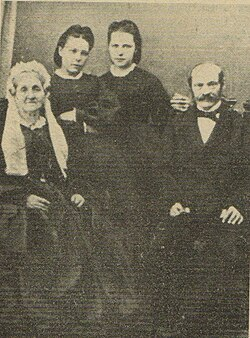

У пачатку 1864 года, пасля арышту Каліноўскага, рэпрэсіўная машына Мураўёва («Вешальніка») дабралася і да сям'і Ямант. Кватэра была разгромлена, а Марыю разам з блізкімі арыштавалі і змясцілі ў вязніцу ў былым кляштары місіянераў. Менавіта ёй з-пад варты Каліноўскі адрасаваў свае знакамітыя развітальныя вершы і «Лісты з-пад шыбеніцы», дзе заклікаў народ працягваць барацьбу.
За сваю радыкальную дзейнасць і супраціў імперыі Марыя Ямант была асуджана на высылку ў Сібір. Яна правяла ў Табольскай губерні каля 10 гадоў. Нават у выгнанні яна працягвала насіць жалобу па пакараным смерцю Каліноўскім.
Яна ўвайшла ў пантэон нацыянальных герояў: Яе жыццё і ахвярнасць (страта каханага, турма і 10 гадоў сібірскай ссылкі) сфармавалі гістарычны міф пра непахіснасць і адданасць Беларусі, які натхняе сучасныя пакаленні беларусаў у барацьбе за свабоду.